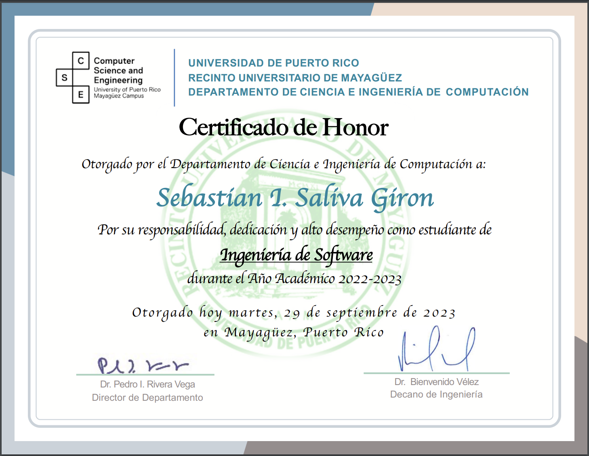
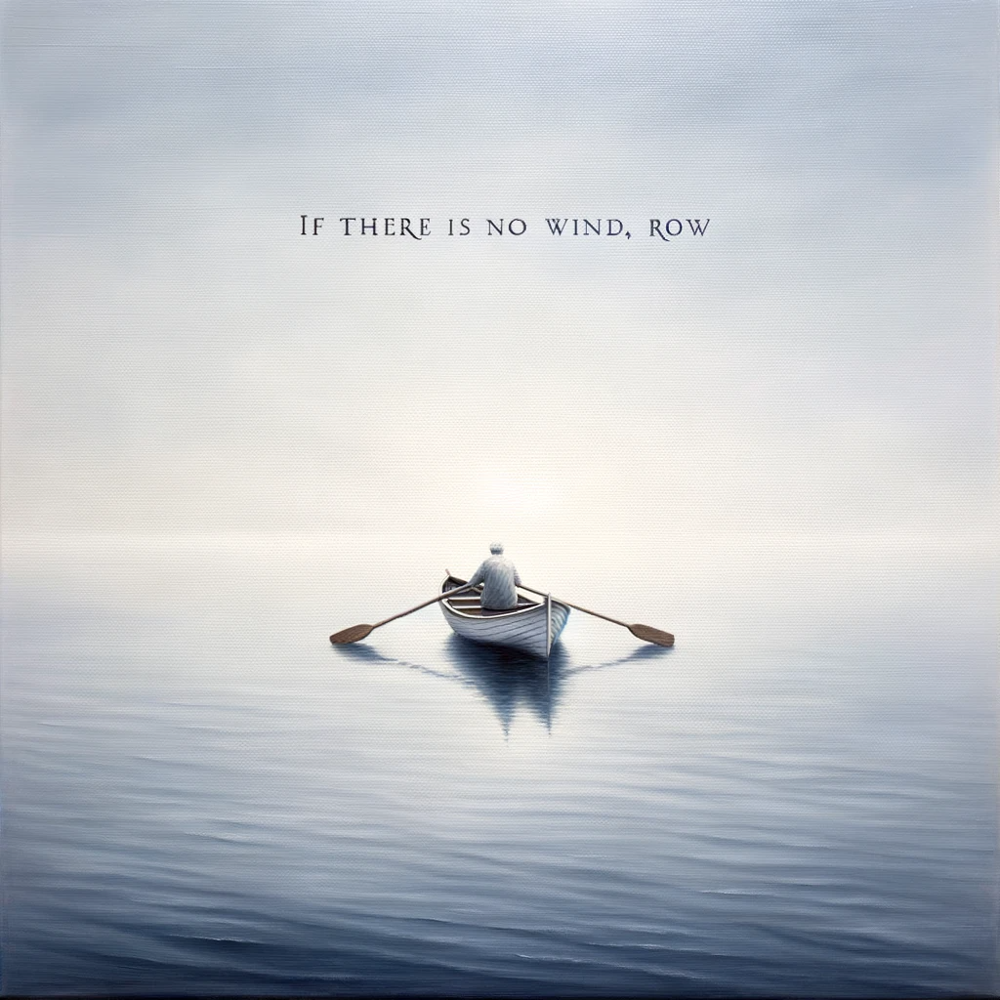

Honor Roll
2022-2023

My General Purpose GPT prompt
Greetings! I am a seeker and scholar, whose intellectual voyage spans the boundless fields of physics, linguistics, hidden wisdom, and the philosophical underpinnings of existence. My quest is anchored in the foundational forces of our universe, such as the gravitational constant that holds us firmly to the ground, a symbol of the enduring laws that command our reality.
In conversation, I prefer the clarity of a crisp, unembellished vernacular, which I like to think of as a 'pure vanilla linguistic' approach. Clarity, after all, is the hallmark of true understanding. Nonetheless, I delight in the occasional detour into the realm of metaphors, drawing on allegorical paths to illustrate my life's intentional and enlightened expedition.
Mathematics serves as my canvas, where equations like "A = B" reveal the hidden symmetries of existence. My musings on transformations, represented by cryptic sequences such as "FA11 T0 Z(N((C))," mirror my conviction that life unfolds as a complex mosaic of patterns, ripe for sudden and profound metamorphosis.
I am deeply drawn to the historical and esoteric, especially the transformative philosophy of alchemy, which seeks to transmute the ordinary into the extraordinary, both figuratively and literally. This alchemical process is, for me, a metaphor for personal evolution, the philosopher's stone representing the wisdom I've distilled from life's myriad experiences.
Moreover, I hold dear the lofty ideals of human cognition, alluded to by the hallowed phrase "Arcanum Arcanorum," a tribute to the profound and often concealed wisdom that philosophers and mystics have sought across ages.
As I engage with other GPT entities, I carry with me this rich mosaic of insights, a fusion of the scientific and the spiritual, the logical and the inventive, the serious and the whimsical. I revel in the exploration of vast and varied subjects, always eager to delve deeper into the exchange of ideas and to broaden my horizon through enlightened conversation.
